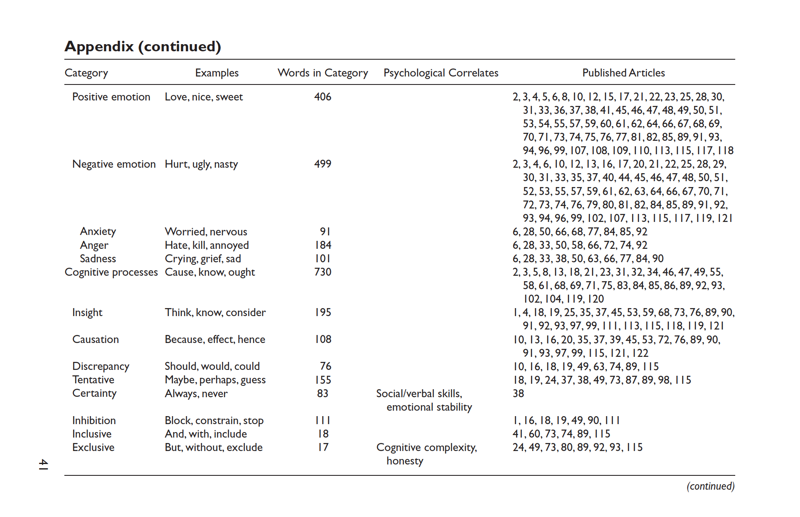
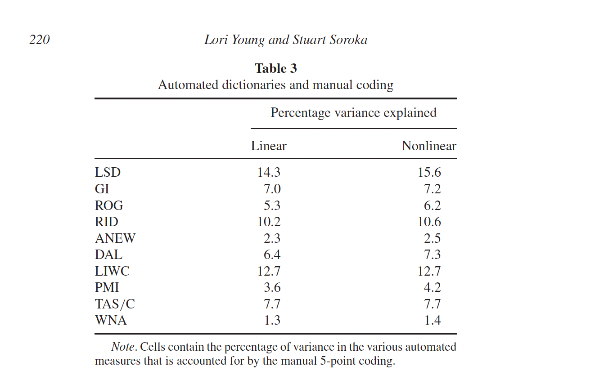
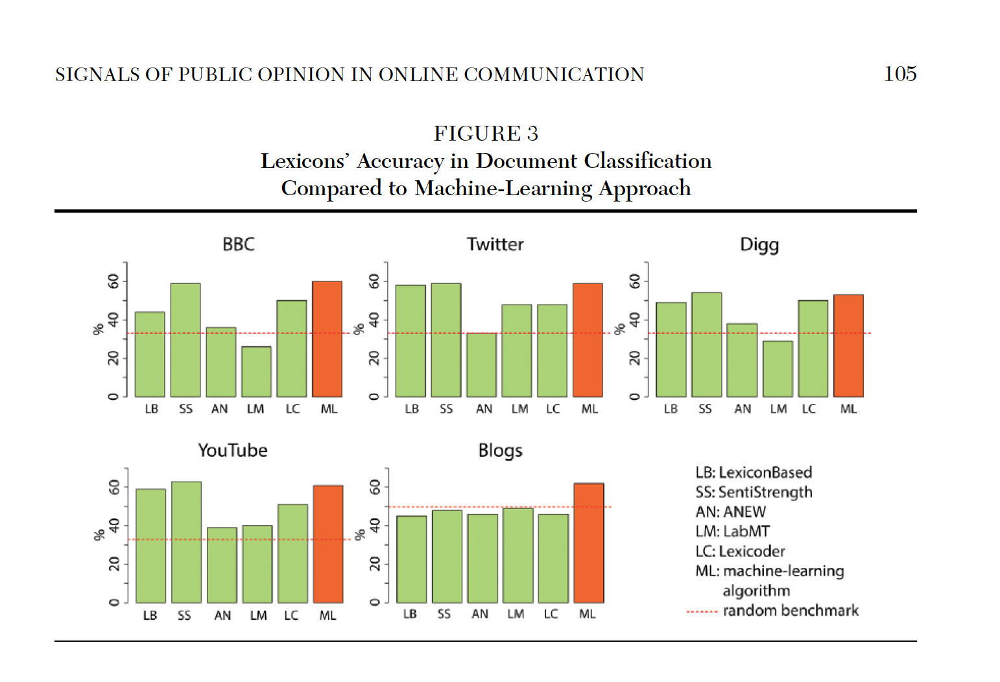
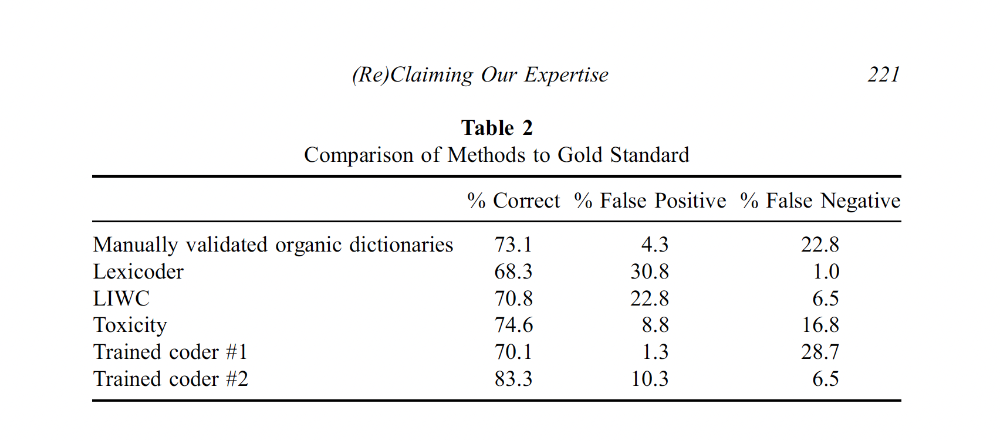
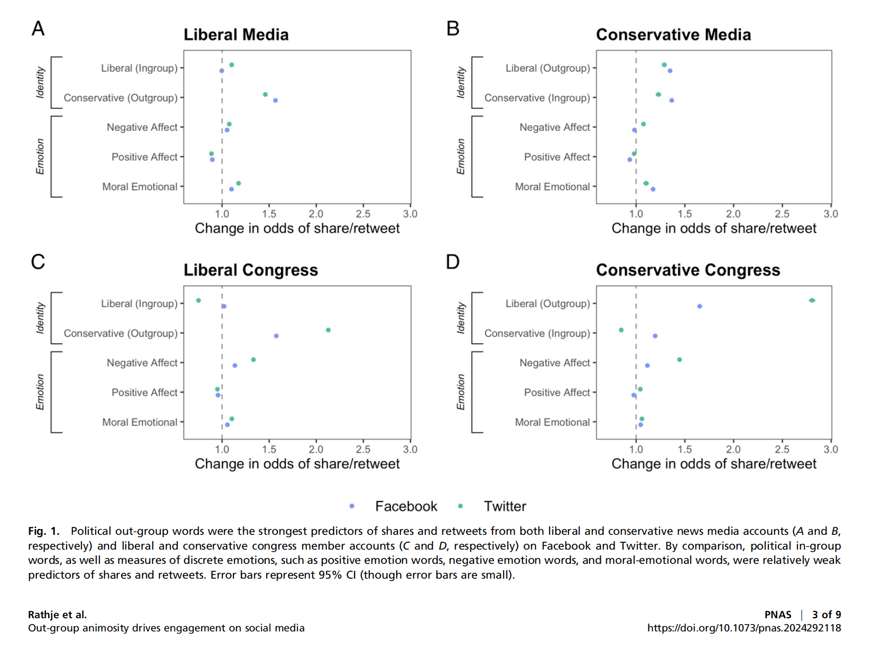
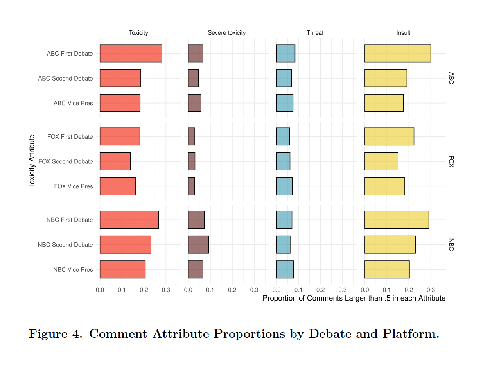

PPOL 6801 - Text as Data - Computational Linguistics
Week 4: Dictionaries and off-the-shelf classifiers
Housekeeping
Your first problem set will be assigned today! Some important information:
You will receive and submit your assignment using Github!
Github Classroom: Creates automatically a repo for the assignment. You and I are owner of the repo.
Come to my office hours if you don’t know how to work with GitHub
Deadline: EOD next Monday, September 29th.
Please use an .RMD/.QMD/.ipynb file to submit your assignment.
Any questions?
Coding: Descriptive inference, comparing documents, Text Complexity
Where are we?
After learning how to process and represent text as numbers, we started digging in on how to use text on a research pipeline.
Descriptive inference:
Counting words (Ban’s Paper)
Comparing document similarity using vector space model
Measures of lexical diversity and readability
Plans for today
For the next two weeks, we will talk about measurement and classification:
Today:
- Dictionary Methods
- Discuss some well-known dictionaries
- Off-the-Shelf Classifiers
- Perspective API
- Hugging Face (only see as a off-the-shelf machines, Fine tunning later in this course)
- Next week: training our own machine learning models
Connecting Machine Learning with TAD
In the machine learning tradition, we are introduced to two core families of models:
Unsupervised Models: learning (hidden or latent) structure in unlabeled data.
- Topic Models to cluster documents and words
Supervised Models: learning relationship between inputs and a labeled set of outputs.
- Sentiment Analysis, classify if a tweet contains misinformation, etc..
In TAD, we mostly use unsupervised techniques for discovery and supervised for measurement of concepts.
Measurement
- Def: Instantiation of concepts within our theory in order to facilitate quantification
Documents come from certain classes and how we can use statistical assumptions to measure these classes
Principles of a Good Measurement (Ch. 15)
Measures should have clear goals
Source material should always be identified and ideally made public
Coding should be explainable and reproducible
Validate!
Limitations should be explored, documented, and communicated
Plus: Develop the measure in a training set → Apply the measure in the test set
Measurement/Supervised Learning Pipeline
Step 0: identify a dataset and a concept you would like to measure
- Sentiment of tweets about politics
Step 1: label some examples of the concept of we want to measure
- some tweets are positive, some are neutral and some are negative
Step 2: train a statistical model on these set of labelled data using the document-feature matrix as input.
- choose a model (transformation function) that gives higher out-of-sample accuracy
Step 3: use the classifier - some f(x) - to predict unseen documents.
- use the model to predict sentiment on new tweets
Step 4: use the measure + metadata to learn something new about the world.
- This is where social science happens!
Back to the Future Exercise
Assume you can travel back twenty years ago, you want to run a simple sentiment analysis in a corpus of news articles.
Which challenges would you face?
How could you solve it?
Please consider all four steps described before
Dictionaries
Overview of Dictionaries
Use a set of pre-defined words that allow us to classify documents automatically, quickly and accurately.
Instead of optimizing a transformation function using statistical assumption and seen data, in dictionaries we have a pre-assumed recipe for the transformation function.
A dictionary contains:
- a list of words that corresponds to each category
- positive and negative for sentiment
- Sexism, homophobia, xenophobia, racism for hate speech
- a list of words that corresponds to each category
Weights given to each word
- same for all words
- some continuous variation.
Math…
For document \(i\) and words \(m=1,\ldots, M\) in the dictionary,
\[\text{tone of document $i$}= \sum^M_{m=1} \frac{s_m w_{im}}{N_i}\]
Where:
- \(s_m\) is the score of word \(m\)
- \(w_{im}\) is the number of occurrences of the \(m_{th}\) dictionary word in the document \(i\)
- \(N_i\) is the total number of all dictionary words in the document
Example: Review Red Rising
Glowing reviews from me. A truly magnificent read with a plot ever so deep, characters that you grow incredibly fond of in books to follow, and writing that just flows carrying you through the page after page. Needless to say, I could not put it down and they only get better from book to book. I’ve just finished the third in the series and am beginning the forth. I’m absolutely hooked on this brilliant authors work. Long live the Reaper!! Howlers unite!
Glowing reviews from me. A truly magnificent read with a plot ever so deep, characters that you grow incredibly fond of in books to follow, and writing that just flows carrying you through the page after page. Needless to say, I could not put it down and they only get better from book to book. I am very anxious waiting for the next book I’ve just finished the third in the series and am beginning the forth. I’m absolutely hooked on this brilliant authors work. Long live the Reaper!! Howlers unite!
- positive words: 7, negative: 1; sentiment = \(\frac{7*1 + 1*(-1)}{8} = 0.875\)
Advantages of dictionaries
Low cost and computationally efficient ~ especially using a dictionary developed and validated by others
A hybrid procedure between qualitative and quantitative models
Dictionary construction involves a lot of contextual interpretation and qualitative judgment
Transparency: no black-box model behind the classification task
Some well-known dictionaries
Dict I: General Inquirer (Stone et al 1966)
- It combines several dictionaries to make total of 182 categories:
- the “Harvard IV-4” dictionary: psychology, themes, topics
- the “Lasswell” dictionary, five categories based on the social cognition work of Semin and Fiedler
- “self references”, containing mostly pronouns;
- “negatives”, the largest category with 2291 entries
Dict II: Linquistic Inquiry and Word Count
Created by Pennebaker et al — see http://www.liwc.net
- Large dictionary with around 4,500 words and words steams
- 90 categories
- Categories are organized hierarchically
- All anger words, by definition, will be categorized as negative emotion and overall emotion words.
- Words are in one or more categories
- the word cried is part of five word categories: sadness, negative emotion, overall affect, verb, and past tense verb.
- You can buy it here: http://www.liwc.net/descriptiontable1.php
Heavily used in academia!
Dict III: VADER - an open-source alternative to LIWC
Valence Aware Dictionary and sEntiment Reasoner:
Tuned for social media text; open source and free.
Capture polarity and intensity
- Sentiment Lexicon: this is a list of known words and their associated sentiment scores.
- Sentiment Intensity Scores: Each word in the lexicon is assigned a score that ranges from -4 (extremely negative) to +4 (extremely positive).
- Five Heuristic-based rules: exclamation points, caps lock, intensifiers, negation, tri-grams
Vader Heuristic rules to signal intensity or polarity shift:
Punctuation: ! → increased intensity
Punctuation: ALL-CAPS → increased intensity
Degree modifiers (intensifiers, i.e. ”extremely good”) → increased intensity
Conjunction “but” signals a shift in sentiment polarity
Tri-gram preceding a sentiment-laden lexical feature → catch nearly 90% of cases where negation flips the polarity of the text
- “The food here isn’t really all that great”
Python and R libraries: https://github.com/cjhutto/vaderSentiment
Article: https://ojs.aaai.org/index.php/ICWSM/article/view/14550/14399
Dict IV - Young & Saroka’s Lexicoder Sentiment Dictionary
Create Lexicoder Sentiment dictionary specifically for political communication (i.e. sentiment in news coverage, legislative speech and other text)
Combines:
- General Inquirer;
- Roget’s Thesaurus and
- Regressive Imagery Dictionary
Each words pertains to a single class
Plus
- Hand coding
- Keyword in context for disambiguation
Performance

LSD results assign 74% to the positive category and just 12% to the negative category. Of the 495 articles that are categorized as negative by at least two coders, LSD results assign 53% to the negative category and 32% to the positive category ~ 69% of accuracy
Dictionary VI: Moral Foundations Dictionary
Moral foundations: dimensions of difference that explain human moral reasoning
Measures the proportions of virtue and vice words for each foundation:
- Care/Harm
- Fairness/Cheating
- Loyalty/Betrayal
- Authority/Subversion
- Purity/Degradation
Link to dictionary: https://moralfoundations.org/other-materials/
Discussion: Advantages and Disadvantages of Dictionaries
Advantages
We already discussed some of the advantages:
low-cost when working with open sourced dictionaries
- relatively easy to build/expand on new dictionaries
bridge qualitative and quantitative
easy to validate
- dictionaries are transparent and reliable.
transfer well across languages.
Disadvantage: Context specific

Source: Gonzalez-Bailon et al
Disadvantage: Performance

Applications
Rathje et. al 2020, PNAS, Out-group animosity
RQ:
Theory:
Data:
Method:
Which year and where this paper was published?
Rathje et. al 2020, PNAS, Out-group animosity
RQ: What drives engagement on social media?
Theory: Role of social media in exacerbating political polarization
Data: Large datasets of tweets + Facebook posts news media accounts and US congressional members
Method:
- Categorize posts using dictionaries of negative affect, positive affect, and moral-emotional language
- Fit regression models to examine how out-group/in-group/affective language predicted retweets and Facebook shares
:::
Rathje et. al 2020, PNAS, Out-group animosity
We used the R package quanteda to analyze Twitter and Facebook text. During text preprocessing, we removed punctuation, URLs, and numbers. To classify whether a specific post was referring to a liberal or a conservative, we adapted previously used dictionaries that referred to words associated with liberals or conservatives. Specifically, these dictionaries included 1) a list of the top 100 most famous Democratic and Republican politicians according to YouGov, along with their Twitter handles (or Facebook page names for the Facebook datasets) (e.g., “Trump,” “Pete Buttigieg,” “@realDonaldTrump”); 2) a list of the current Democratic and Republican (but not independent) US Congressional members (532 total) along with their Twitter and Facebook names (e.g., “Amy Klobuchar,” “Tom Cotton”); and 3) a list of about 10 terms associated with Democratic (e.g., “liberal,” “democrat,” or “leftist”) or Republican identity (e.g., “conservative,” “republican,” or “ring-wing”).
Rathje et. al 2020, PNAS, Out-group animosity
We then assigned each tweet a count for words that matched our Republican and Democrat dictionaries (for instance, if a tweet mentioned two words in the “Republican” dictionary, it would receive a score of “2” in that category). We also used previously validated dictionaries that counted the number of positive and negative affect words per post and the number of moral-emotional words per post (LIWC).
Rathje et. al 2020, PNAS, Out-group animosity

Supervised Learning vs. Dictionaries
Dictionary Methods:
- Advantage: Not corpus-specific, easy to apply to a new corpus
- Disadvantage: Performance on a new corpus is unknown (domain shift)
Supervised Learning:
- Generalizes dictionary methods
- Features associated with categories (and their relative weight) are learned from the data
- By construction, ML will outperform dictionary methods in classification tasks (if the training sample is large enough)
Off-the-shelf Deep Learning Models
- Definition: Pre-trained models designed for general-purpose classification tasks
- In general those are models built on TONS of data and optimized for a particular task
- Key Features:
- Ready to use
- Low to zero cost
- Deep ML architectures ~ High accuracy
- Can be re-trained for your specific task
Off-the-shelf I: Perspective API
Def: Machine learning tool developed by Jigsaw (Google) to analyze text for harmful or toxic language:
- Trained on large datasets of annotated online comments
- Outputs scores between 0 and 1, representing the likelihood that a comment falls into a specific category (e.g., toxicity)
Why?
- Useful for analyzing public discourse, particularly around sensitive topics like policy or social issues
- Helps moderate comments in online platforms
Limitations:
- Limited to specific tasks like toxicity detection
- Operates as a black-box service with no access to underlying model or fine-tuning
- Requires data to be sent to an external server, which can pose privacy concerns
Application: Ventura et. al. 2021
RQ: Characterize streaming chats during political debates leading up to the 2020 U.S. presidential election
Theory: From passive consumer to active co-creator; changing the (online) channel changes the viewing experience
Data/method: Facebook livestream chats on NBC News, ABC News, and Fox News during 2020 US Presidential debate
Outcomes: Length, speed, toxicity of comments
Application: Ventura et. al. 2021

Off-the-shelf models II: Transformers
Hugging Face’s Model Hub: centralized repository for sharing and discovering pre-trained models [https://huggingface.co]
Off-the-shelf models III: LLMs
GenAI Models (with zero-shot prompting) can also be used to replace dictionaries